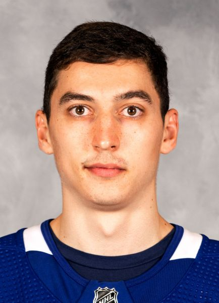

Maple Leafs Roster
Auston Matthews | #34
Born: September 17, 1997
Birthplace: San Ramon, CA, USA
Shoots: Left
Draft: 2016 TOR, 1st rd, 1st pk (1st overall)
Birthplace: San Ramon, CA, USA
Shoots: Left
Draft: 2016 TOR, 1st rd, 1st pk (1st overall)
Matthews is the NHL's Sun Belt growth come to spectacular life.
Who would have thought a decade or so ago that a player raised in Scottsdale, Arizona, would be the No. 1 pick in the 2016 NHL Draft --
and a potential franchise player for the Toronto Maple Leafs after scoring 158 goals before his 23rd birthday?
Matthews was the first United States-born player to be chosen No. 1 since the Chicago Blackhawks took Patrick Kane with the first pick in the 2007 NHL Draft. While growing up, he idolized players such as Shane Doan and Daniel Briere, members of the Phoenix/Arizona Coyotes, a franchise that relocated in 1996 from Winnipeg. Matthews was an all-around athlete who chose to focus on hockey as an adolescent, and he excelled at every level of the game on his unique path to the NHL.
Matthews was the first United States-born player to be chosen No. 1 since the Chicago Blackhawks took Patrick Kane with the first pick in the 2007 NHL Draft. While growing up, he idolized players such as Shane Doan and Daniel Briere, members of the Phoenix/Arizona Coyotes, a franchise that relocated in 1996 from Winnipeg. Matthews was an all-around athlete who chose to focus on hockey as an adolescent, and he excelled at every level of the game on his unique path to the NHL.
Mitchell Marner | #16
Born: May 5, 1997
Birthplace: Markham, ON, CAN
Shoots: Right
Draft: 2015 TOR, 1st rd, 4th pk (4th overall)
Birthplace: Markham, ON, CAN
Shoots: Right
Draft: 2015 TOR, 1st rd, 4th pk (4th overall)
You would think the expectations that come with being a top draft pick of the Toronto Maple Leafs are tough enough
without comparisons to Hockey Hall of Famer Doug Gilmour being added to the mix.
But Marner, who was selected by Toronto with the No. 4 pick in the 2015 NHL Draft, embraces being likened to Gilmour. He even wore the former Maple Leafs center's No. 93 while playing for London of the Ontario Hockey League.
But Marner, who was selected by Toronto with the No. 4 pick in the 2015 NHL Draft, embraces being likened to Gilmour. He even wore the former Maple Leafs center's No. 93 while playing for London of the Ontario Hockey League.
William Nylander | #88
Born: May 1, 1996
Birthplace: Calgary, AB, CAN
Shoots: Right
Draft: 2014 TOR, 1st rd, 8th pk (8th overall)
Birthplace: Calgary, AB, CAN
Shoots: Right
Draft: 2014 TOR, 1st rd, 8th pk (8th overall)
The travel that goes along with a pro hockey career shouldn't be a problem for Nylander.
By age 20, he'd already been to a lot of NHL cities.
He was born on May 1, 1996, in Calgary, when his father, longtime NHL forward Michael Nylander, a native of Sweden, was playing with the Flames. William was raised in a series of cities in the U.S., as the family followed Michael's career to Tampa Bay, Chicago, Washington, Boston and New York. In all, Michael played 920 games with seven NHL teams.
He was born on May 1, 1996, in Calgary, when his father, longtime NHL forward Michael Nylander, a native of Sweden, was playing with the Flames. William was raised in a series of cities in the U.S., as the family followed Michael's career to Tampa Bay, Chicago, Washington, Boston and New York. In all, Michael played 920 games with seven NHL teams.
John Tavares | #91
Born: September 20, 1990
Birthplace: Mississauga, ON, CAN
Shoots: Left
Draft: 2009 NYI, 1st rd, 1st pk (1st overall)
Birthplace: Mississauga, ON, CAN
Shoots: Left
Draft: 2009 NYI, 1st rd, 1st pk (1st overall)
Tavares launched a new chapter in his NHL career on July 1, 2018,
when he signed a seven-year, $77 million contract with the Toronto Maple Leafs, the team that the native of Mississauga,
Ontario, grew up rooting for.
The Maple Leafs got a player who had become one of the NHL's top stars during nine seasons with the New York Islanders, who selected him with the No. 1 pick in the 2009 NHL Draft. He had NHL career highs in goals (47) and points (88) in his first season with the Maple Leafs and was named Toronto's captain on Oct. 2, 2019.
The Maple Leafs got a player who had become one of the NHL's top stars during nine seasons with the New York Islanders, who selected him with the No. 1 pick in the 2009 NHL Draft. He had NHL career highs in goals (47) and points (88) in his first season with the Maple Leafs and was named Toronto's captain on Oct. 2, 2019.
Zach Hyman | #11
Born: June 9, 1992
Birthplace: Toronto, ON, CAN
Shoots: Right
Draft: 2010 FLA, 5th rd, 3rd pk (123rd overall)
Birthplace: Toronto, ON, CAN
Shoots: Right
Draft: 2010 FLA, 5th rd, 3rd pk (123rd overall)
Hyman was selected by the Florida Panthers in the fifth round (No. 123) in the 2010 NHL Draft after he had 75 points
(35 goals, 40 assists) with Hamilton of the Ontario Junior Hockey League. In 2010-11,
he was named the Canadian Junior A Player of the Year and RBC CJHL Player of the Year after he had 102 points
(42 goals, 60 assists) in 43 games.
Hyman played collegiately at the University of Michigan, where he had 89 points (35 goals, 54 assists) in 151 games. In 2014-15, his senior season, he led the Big Ten with 54 points (22 goals, 32 assists) in 37 games and was named a First Team All-America and a Hobey Baker Award finalist.
Hyman played collegiately at the University of Michigan, where he had 89 points (35 goals, 54 assists) in 151 games. In 2014-15, his senior season, he led the Big Ten with 54 points (22 goals, 32 assists) in 37 games and was named a First Team All-America and a Hobey Baker Award finalist.
Ilya Mikheyev | #65
Born: October 10, 1994
Birthplace: Omsk, RUS
Shoots: Left
Draft: 2019 TOR
Birthplace: Omsk, RUS
Shoots: Left
Draft: 2019 TOR

Mikheyev was an instant hit in the NHL after signing with the Toronto Maple Leafs on May 6, 2019,
following four full seasons with Avangard Omsk of the Kontinental Hockey League, his hometown team.
The 25-year-old forward made the Maple Leafs at training camp and made his NHL debut a memorable one by scoring one goal and assisting on another against the Ottawa Senators in Toronto's season-opener on Oct. 2, 2019. He became a regular and had scored his fourth goal in six games on Dec. 27, 2019, when a skate cut in a game severed an artery and tendons in his right wrist. He had surgery but was sidelined for the remainder of the season after scoring eight goals and 15 assists in 39 games.
The 25-year-old forward made the Maple Leafs at training camp and made his NHL debut a memorable one by scoring one goal and assisting on another against the Ottawa Senators in Toronto's season-opener on Oct. 2, 2019. He became a regular and had scored his fourth goal in six games on Dec. 27, 2019, when a skate cut in a game severed an artery and tendons in his right wrist. He had surgery but was sidelined for the remainder of the season after scoring eight goals and 15 assists in 39 games.